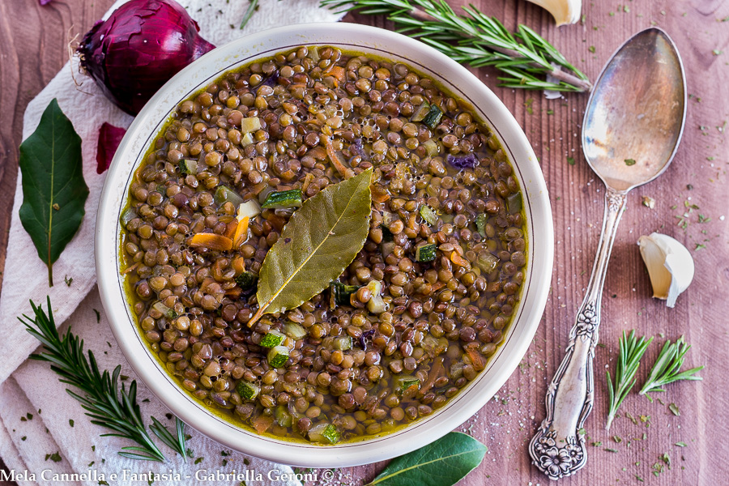
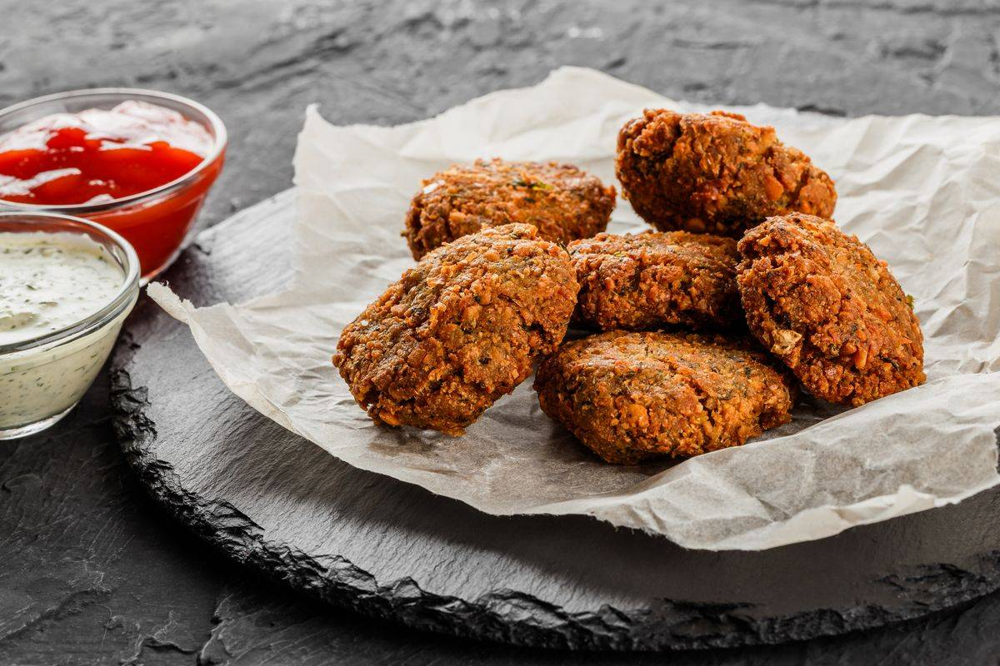

Che cosa sono le lenticchie?
Le lenticchie sono legumi antichissimi, coltivati da millenni nel bacino del Mediterraneo. Sono note per il loro alto contenuto di proteine, ferro e fibre, e rappresentano una risorsa alimentare fondamentale in molte culture. Le varietà più comuni includono quelle verdi, rosse, gialle e nere. Si cuociono rapidamente e sono molto versatili in cucina.
Minuscole, tonde e tenaci, le lenticchie racchiudono un’eredità di sopravvivenza e abbondanza. Da sempre compagne dei popoli, attraversano epoche e continenti nutrendo corpi e speranze. Simbolo di fortuna e prosperità, si fanno spazio in ogni stagione, adattandosi con grazia a minestre rustiche, piatti speziati o preparazioni raffinate. Ogni varietà porta con sé un colore, un aroma, una storia — piccoli tesori della terra che parlano di semplicità e saggezza antica.
Valori nutrizionali delle lenticchie (per 100g cotte)
Le lenticchie sono perfette per un'alimentazione sana e bilanciata, soprattutto per chi cerca fonti vegetali di ferro e proteine.

ZUPPA DI LENTICCHIE CLASSICA
Ingredienti
- 200g di lenticchie secche
- 1 carota
- 1 costa di sedano
- 1 cipolla
- 1 foglia di alloro
- Olio extravergine d'oliva
- Sale e pepe
Preparazione
In una pentola, soffriggi le verdure tritate. Aggiungi le lenticchie e copri con acqua. Unisci l'alloro e lascia cuocere per 30-40 minuti. Regola di sale e pepe e servi con un filo d'olio.

POLPETTE DI LENTICCHIE E CURCUMA
Ingredienti
- 250g di lenticchie cotte
- 50g di pangrattato
- 1 uovo
- Prezzemolo tritato
- 1 spicchio d'aglio
- Sale, pepe e curcuma
- Olio per la cottura
Preparazione
Frulla le lenticchie con aglio e prezzemolo. Unisci l'uovo e il pangrattato, aggiusta di spezie. Forma polpette e cuocile in padella o al forno finché dorate.